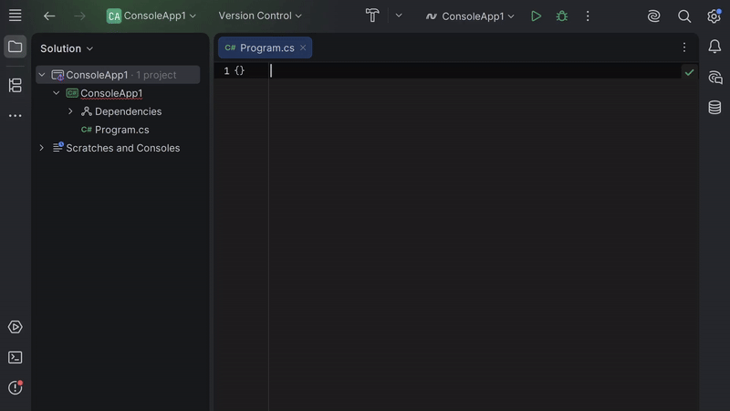
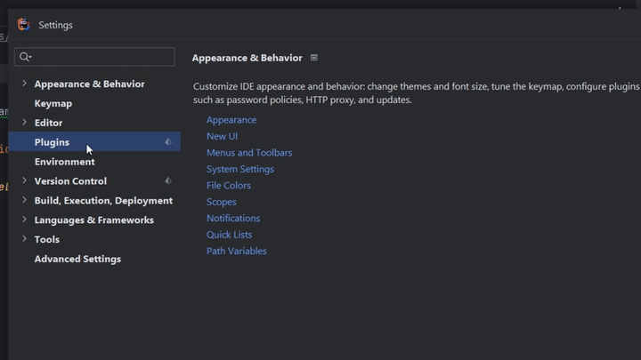
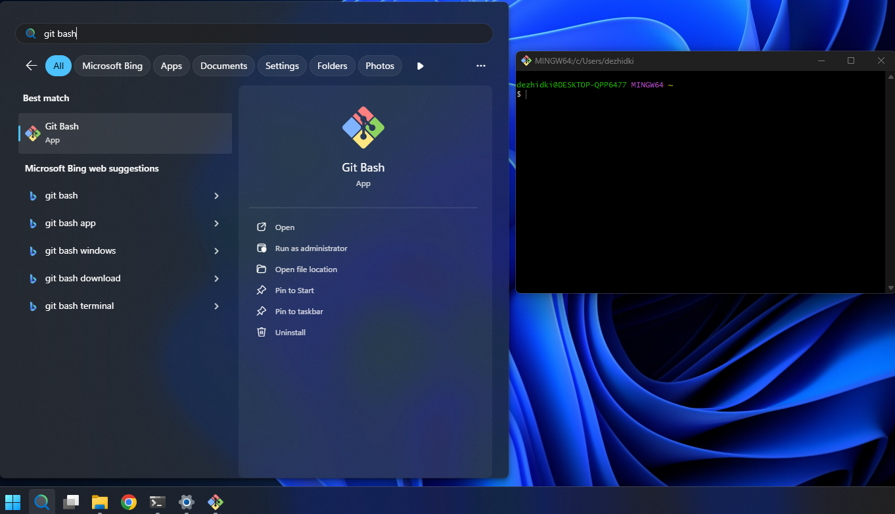
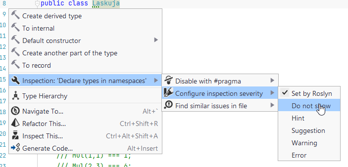
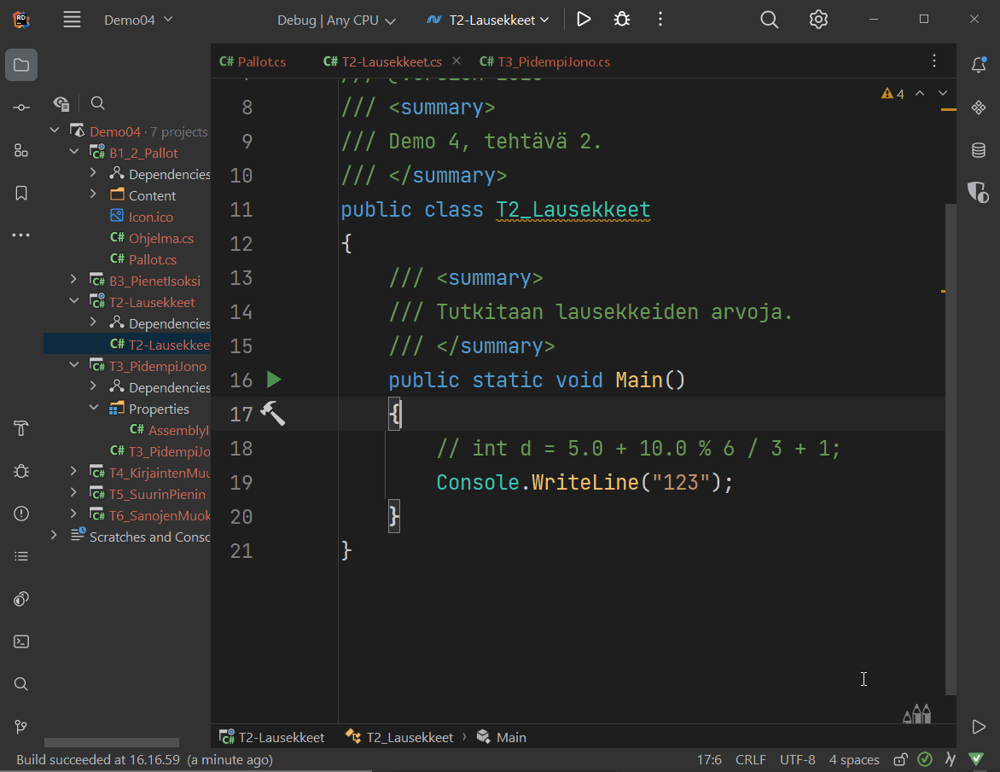
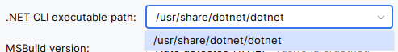

Työkaluohjeet¶
Ohjelmointi 1 -opintojaksolla käytämme alla olevia työkaluja. Tässä dokumentissa opastetaan, miten nämä työkalut asennetaan.
- .NET – ohjelmistoviitekehys (engl. framework), tarvitaan C#-ohjelmien kehittämiseen ja valmiiden ohjelmien ajamiseen.
- JetBrains Rider – integroitu kehitysympäristö, jolla voi kirjoittaa, kääntää, ajaa ja debugata ohjelmia. Rider on erityisesti .NET- ja C#-ohjelmille tarkoitettu IDE. Käytämme ilmaista Community Edition -versiota.
- JyPeli – pelimoottori, joka on Jyväskylän yliopistossa kehitetty C#-kirjasto pelien tekemiseen.
- ComTest – yksikkötestigeneraattori, joka on aputyökalu, jonka avulla kirjoitetulle koodille voidaan kirjoittaa testejä helposti luettavalla merkintätavalla.
- Git – versiohallintaohjelma, joka mahdollistaa koodin versioinnin ja yhteistyön koodaajien välillä. Tätä voisi kutsua koodaajien Google Docsiksi. Gitiä tarvitset mahdollisesti vasta harjoitustyön yhteydessä, joten sitä ei tarvitse asentaa vielä opintojakson alussa.
Yllä olevat ohjelmat löytyvät valmiiksi asennettuna Agoran mikroluokissa (Alban puoleinen pääty, 1. ja 2. kerros). Jos sinulla on oma tietokone, suosittelemme vahvasti, että asennat ohjelmat lisäksi niille tietokoneille, joilla aiot suorittaa opintojakson.
Käyttöjärjestelmä ja vaatimukset¶
Tällä sivulla olevat ohjeet riippuvat käyttöjärjestelmästä. Valitse käyttöjärjestelmä alta.
Valitsit Windows -käyttöjärjestelmän. Alla olevat ohjeet on testattu Windows 11:llä. Windows 10:llä toimisesta ei ole varmuutta.
Valitsit macOS-käyttöjärjestelmän. Alla olevat ohjeet on testattu seuraavilla käyttöjärjestelmillä:
- macOS 10.15 Catalina
- macOS 13 Ventura
- macOS 14 Sonoma
Valitsit Linux-käyttöjärjestelmän. Alla olevat ohjeet on testattu seuraavilla käyttöjärjestelmillä:
- Arch Linux (
6.16.1-arch1-1) - Linux Mint 22.1 (
Linux 6.8.0-51-generic) - Linux Ubuntu 24.04.3 LTS
- Debian 13
Kurssin ohjelmointiympäristö ei ole tuettu Chrome OS -käyttöjärjestelmässä. Vaikka työkalujen asentaminen saattaakin onnistua, emme voi taata, että kaikki työkalut toimivat käyttökelpoisesti tai edes oikein. Suosittelemme vahvasti käyttämään joko Windows-, macOS- tai Linux-käyttöjärjestelmää.
Pikakurssi komentorivin käyttöön¶
Tämän sivun asennusohjeet vaativat komentorivin avaamista ja käyttöä.
Jos et ikinä ennen käyttänyt komentoriviä, katso pikainen johdatus komentorivin käyttöön alta.
Pikainen johdatus komentorivin käyttöön (Avaa klikkaamalla)
Mikä on komentorivi?
Komentorivi on (tämän ohjeen puitteissa) tietokoneohjelma, jolla tietokonetta voi ohjata tekstillä. Esimerkiksi, kun Windowsissa jonkun kansion sisällön katsominen onnistuu graafisesti avaamalla Resurssienhallinta (macOS:lla Finder), sama asia onnistuu komentorivillä kirjoittamalla tekstimuotoinen komento, joka tulostaa näkyviin kansion sisällön.
Vaikka olet ehkä aiemmin käyttänyt komentoriviä harvoin jos koskaan, ohjelmoinnin yhteydessä komentorivi on varsin hyödyllinen työkalu. Syitä on monia, kuten toiston ja automaation helpottaminen. Tämän ohjeen kannalta olennainen syy on, että ohjelmien asentaminen onnistuu nykyään jopa helpommin komentorivillä kuin etsimällä sopiva asennusohjelma verkosta.
Komentorivistä käytetään myös nimityksiä pääte ja terminaali. Englanniksi komentorivistä käytetään nimityksiä command line, terminal ja shell. Kaikki nämä tarkoittavat samaa asiaa: ohjelmaa, jolla tietokonetta voi ohjata kirjoittamalla komentoja tekstinä.
Miten avaan komentoriviin omalla tietokoneellani?
Toimintatapa vaihtelee eri käyttöjärjestelmillä. Samalla käyttöjärjestelmällä voi olla myös useita komentoriviohjelmia. Alla olevilla ohjeilla saata ainakin kaikki tarvittavat työkalut asennettua.
- Paina Käynnistä-painikkeen vieressä olevaa Haku-ikonia
- Kirjoita hakupalkkiin PowerShell
- Valitse löytyvistä tuloksista Windows PowerShell
Tämä avaa PowerShell-komentorivin, joka on eräs Windowsilla oleva komentorivipääte.
- Avaa Launchpad
- Kirjoita ylhäällä olevaan hakupalkkiin Pääte (tai Terminal jos käyttöjärjestelmän kieli on englanti)
- Avaa hakutuloksena löytyvä Pääte tai Terminal-sovellus
Tämä avaa Pääte-sovelluksen, joka on macOS:n sisäänrakennettu pääte.
Käytä jakelun omaa päätettä. Pääte yleensä löytyy sanalla Terminal tai Terminal Emulator. Tämä usein avaa bash-päätteen, joka on sopiva tämän ohjeen kannalta.
Miten käytän komentoriviä?
Kun näet tällä sivulla alla olevan tapaisen laatikon:
Tulee sinun kirjoittaa laatikossa oleva komento ja suorittaa se komentorivillä. Toimi seuraavasti:
- Klikkaa komentorivi aktiiviseksi ikkunaksi.
- Kirjoita laatikossa oleva komento komentoriviin näppäimistöllä.
- Tarkista, että kirjoitit komennon täysin oikein. Huomaa, että kirjainkoolla, välilyönneillä ja muilla merkeillä on merkitystä komennon kannalta!
- Kun olet varmistanut, että kirjoitit komennon oikein, paina Enter-näppäintä.
Riippuen komennosta komentoriviin voi ilmestyä tuloste, virhe tai ei mitään. Jotkin ohjelmat eivät tulosta mitään tekstiä onnistumisen merkiksi. Kun komennon suoritus on valmis, komentorivin uudelle riville ilmestyy uusi komentokehote.
Kokeile kirjoittaa ja suorittaa yllä oleva esimerkkikomento.
Komento listaa hakemistossa olevien tiedostojen ja kansioiden nimiä (ls on lyhenne sanalle "list").
Kun tällä sivulla näet laatikon, jossa on useita rivejä, kuten
Toimi seuraavasti:
- Tee yllä mainitut vaiheet 1–4 vain ensimmäisellä rivillä olevalle komennolle (eli tässä
echo "Kissa") - Tee yllä mainitut vaiheet 1–4 vain toisella rivillä olevalle komennolle (eli
ls) - Jatka rivien suorittamista kunnes olet suorittanut kaikki laatikossa olevat rivit
Toisin sanoen, tällä sivulla jokainen yksittäinen komento on aseteltu omalle rivilleen. Tarkoitus on, että suoritat jokaisen rivin yksi kerrallaan siinä järjestyksessä, jossa ne on laatikossa kirjoitettu.
Kokeile kirjoittaa ja suorittaa yllä olevassa laatikossa olevat komennot. Kirjoita ja suorita ensin komento echo "Kissa" ja sen jälkeen komento ls. Muista, että tietokone suorittaa komennon vasta, kun painat Enter-painiketta.
Voinko kopioida komentoja kirjoittamisen sijaan?
Kyllä voit. Tällä ohjesivulla komentojen kopiointi onnistuu klikkaamalla kopioitavasta komennosta
kerran ja painamalla Ctrl+C (Windows, Linux) tai Command+C (macOS).
Komennon liittäminen komentoriville riippuu käyttöjärjestelmästä:
- Windows: Valitse PowerShell-komentorivi aktiiviseksi ja paina
Ctrl+V(tai klikkaa hiiren oikea painike) - macOS: Valitse Pääte aktiiviseksi ja paina
Command+V - Linux: Valitse komentorivi aktiiviseksi ja paina
Ctrl+Shift+VTAIShift+Insert. Tarkista pääteohjelmasi ohjeista oikea näppäinoikotie
Varoitus
Älä ikinä kopioi ja liitä komentoriville mitään komentoja, joihin et luota etkä tiedä, mitä ne oikeasti tekevät. Komentorivien komennot ovat usein peruuttamattomia: jos vahingossa poistat jonkun tiedoston, poisto on usein lopullinen eikä sitä voi peruuttaa. Esimerkiksi tekoälyn ehdottamiin komentoihin tulee suhtautua aina varauksella. Tällä sivulla mainitut komennot on testattu toimivaksi ja turvalliseksi vastuuopettajan toimesta.
Valmistelu¶
- Varmista, että tietokoneesi on ajan tasalla (Windows Update:ssa ei uusia päivityksiä) ja että näytönohjaimen ajurit ovat asennettu.
- Avaa PowerShell-komentorivi (Haku-ikoni › Kirjoita PowerShell › Windows PowerShell).
-
Kokeile, että
winget-komento on asennettu ja toimii. Suorita seuraava komento:Tuloksena pitäisi tulostua
winget-työkalun versio. Jos sen sijaan saat virheen, jossa lukee 'winget' is not recognized as the name of a cmdlet, function, script file, or operable program, tarkoittaa tämä, että sinulla todennäköisesti ei olewinget-työkalua asennettuna. Kokeile siinä tapauksessa seuraavat ratkaisut:- Tarkista, että käyttöjärjestelmäsi on ajan tasalla
- Kokeile ladata ja asentaa
winget-käsin: Lataa asennusohjelma. Asennuksen jälkeen sulje ja käynnistä PowerShell uudelleen.
- Avaa Pääte tai Terminal (Launchpad › Pääte/Terminal)
-
Asenna ensin macOS:n kehitystyökalut suorittamalla alla oleva komento:
Komennon suorittamisen jälkeen saatat saada seuraavanlaisen ilmoituksen: Komento "xcode-select" vaatii komentorivikehitystyökalut. Haluatko asentaa työkalut nyt? (Englanniksi: The 'xcode-select' command requires the command line developer tools. Would you like to install the tools now?)
Jos sellainen ilmoitus ilmestyy, valitse Asenna/Install ja odota työkalujen asentumista. Hyväksy tarvittaessa käyttöehdot. Kun asennus on valmis, saat Ohjelmisto asennettiin/The software was installed -dialogin. Klikkaa silloin Valmis.
Jos saat virheen, jossa lukee
command line tools are already installed, sinulla on jo tarvittavat työkalut asennettuna ja voit jatkaa seuraavaan vaiheeseen. -
Asenna Homebrew-ohjelmahallintatyökalu seuraavalla komennolla:
Anna työkalun latautua rauhassa.
Kirjoita macOS-käyttäjäsi salasana, kun Password-kenttä ilmestyy. Huomaa, että salasanan kirjoittaminen ei tuota mitään näkyvää tulostetta komentoriville, ei edes
*-merkkejä. Paina Enter-painiketta, kun olet kirjoittanut salasanan.Ennen asennusta Homebrew vielä tulostaa varmistusdialogin, jonka lopussa lukee
Paina siinä tapauksessa Enter-näppäintä ja odota ohjelman asentumista.
-
Suorita seuraavat komennot (huom: 1 komento per rivi, 4 komentoa yhteensä):
Nämä komennot tekevät seuraavat asiat:
- Komento 1 tarkistaa, onko tietokone Apple Silicon tai Intel -pohjainen.
- Komento 2 lisää tyhjän rivin komentoriviasetuksiin
- Komento 3 muokkaa komentorivin asetuksia niin, että jatkossa Homebrew ladataan aina avatessa uusi Pääte
- Komento 4 lataa Homebrewin nykyiseen komentoriviin
-
Testaa, että Homebrew toimii suorittamalla komento:
Jos asennus suoritettiin onnistuneesti, näet seuraavanlaisen tulosteen:
Versionumero
X.X.Xvoi olla mikä tahansa; olennaista on, että tuloste ilmestyy näkyviin.
Alla olevat ohjeet olettavat, että sinulla on kokemusta ohjelmien asentamisesta sinun käyttämälläsi Linux-jakelulla. Linux-ohjeet toimivat täten ohjenuorana; käytä tarvittaessa omaa harkintaa.
- Tarkista, että sinulla on tarvittavat grafiikkakirjastot asennettuna.
JyPeli ainakin tarvitsee GLFW-kirjaston, joka löytyy eri jakeluista valmiina pakkauksena:
- Ubuntu, Debian, openSUSE:
libglfw3 - Arch, Fedora:
glfw
- Ubuntu, Debian, openSUSE:
- Vaikka osa työkaluista löytyy jakelujen pakkaustehallinnasta, jotkin graafiset ohjelmat (erityisesti Rider ja VS Code) eivät ole yleensä julkaistu jakelukohtaisissa repoissa. Suosittelemme käyttämään jakelusta riippumatonta pakkaustenhallintaa, kuten Snap tai Flatpak. Tällä sivulla olevat ohjeet käyttävät ensisijaisesti Snapia tai jakelukohtaisia pakkauksia, jos niitä on.
- Kun olet asentanut tarvittavat esipakkaukset, käynnistä uusi tyhjä pääte.
.NET¶
- Avaa PowerShell-komentorivi ellei se ole jo auki.
-
Suorita alla oleva komento
Odota komennon suorittamista loppuun ja anna tarvittaessa asennusoikeus. Jos näet komentorivillä kysymyksen, kuten:
Paina komentorivillä
y-näppäintä ja sen jälkeenEnter-näppäintä.Tarkista lopuksi, että komentorivillä olevassa tulosteessa on teksti
Successfully installed. -
Sulje kaikki auki olevat komentorivit ja avaa uusi PowerShell-komentorivi
-
Testaa, että .NET on asennettu suorittamalla komento:
Jos asennus onnistui, näet seuraavanlaisen tulosteen:
Huomaa, että
XXXon joku numero; olennaista, että versiona lukee10.0ja että virhettä ei tule.
- Avaa Pääte ellei se ole jo
-
Asenna .NET suorittamalla alla oleva komento
Anna asennuksen suoriutua loppuun asti. Sinulta saatetaan pyytää macOS-käyttäjän salasanaa
Password:-kentässä. Kirjoita silloin salasana paikalle ja paina Enter-näppäintä. (Mikäli vastaan tulee tilanne että edelliset komennot menevät läpi mutta dotnet ei kuitenkaan ole asentunut, voit seurata Microsoftin asennusohjeita) -
Sulje kaikki auki olevat komentorivit ja avaa uusi Pääte
-
Testaa, että .NET on asennettu suorittamalla komento:
Jos asennus onnistui, näet seuraavanlaisen tulosteen:
Huomaa, että
XXXon joku numero; olennaista, että versiona lukee10.0ja että virhettä ei tule.
- Avaa jakelusi pääteohjelma ellei se ole jo
- Asenna .NET SDK -pakkaus:
dotnet-sdk-10.0. Pakkauksen nimi on yleensä sama kaikissa yleisillä jakeluissa (Ubuntu, Debian, Fedora, Arch jne.) - Asennuksen jälkeen sulje ja avaa pääte uudelleen
-
Testaa, että .NET on asennettu suorittamalla komento:
Jos asennus onnistui, näet seuraavanlaisen tulosteen:
Huomaa, että
XXXon joku numero; olennaista, että versiona lukee10.0ja että virhettä ei tule.
JetBrains Rider¶
- Avaa PowerShell-komentorivi ellei se ole jo auki.
-
Asenna JetBrains Rider suorittamalla alla oleva komento:
Ohjelman lataamisen jälkeen avautuu asennusohjelma. Etene asennusohjelmassa eteenpäin Next-painikkeella. Kohdassa Installation Options valitse seuraavat ruksit päälle:
- Add "Open Folder as Project"
- Install JetBrains ETW Host Service
- Add Rider executables to Microsoft Defender exclusions
- Create Associations: .sln, .cs, .csproj
Etene asennusohjelmassa ja anna ohjelman asentua.
-
Kun pääset asennusohjelman loppuun, valitse Run JetBrains Rider ja paina Finish. Testaa, että ohjelma toimii.
Ensimmäisellä kerralla käynnistys saattaa kestää, sillä järjestelmä tarkistaa sovelluksen. Järjestelmä saattaa myös kysyä, Rider on internetistä ladattu sovellus. Avataanko se?. Siinä tapauksessa voi valita Avaa.
Hyväksy mahdolliset Riderin käyttöehdot.
-
Ikkunaan ilmestyy mainos tekoälylisäkkeestä: JetBrains Rider goes AI. Paina kulmasta X, älä paina Let's go. Saat nyt ilmoituksen Free trial has started ..xx days left.
-
Paina oikeasta alakulmasta Trial, ja valitse Free for Learning and hobby, ja sen jälkeen Learning and self-education.
-
Valitse Register-linkki ja rekisteröidy JetBrains-käyttäjäksi. Valitse Continue with email ja tee itsellesi tunnus. Tunnuksen ei tarvitse liittyä yliopistoon mitenkään.
-
Kun olet rekisteröitynyt, saatat mahdollisesti joutua kirjautumaan uudelleen. Valitse silloin Log in for Non-Commercial License.
Kun olet kirjautunut, hyväksy vielä lisenssin ehdot ja valitse Start Non-Commercial license. (TODO: Tämä vaihe on muuttunut syksyllä 2026. Jos tämä ohje ei vastaa tilannetta, muokkaa tätä ohjetta tai ilmoita opettajille.)
-
Suorita asetusten asettaminen loppuun. Suositellut asetukset:
- Teema: Valitse haluamasi teema
- Näppäimistöasettelu: Suosittelemme vaihtoehtoja Visual Studio tai VS Code
- Pluginit: valitse Continue without Plugins
-
Kun olet valmis ja pääset Welcome to JetBrains Rider -ikkunaan, ohjelman asennus on onnistunut.
-
Poistetaan oikoluku. Ollessasi Welcome-ikkunassa, valitse alhaalta Configure. Kirjoita hakukenttään "spell" ja mene Spelling › .NET languages ja klikkaa pois valinta Enable spell checking -kohdasta.
-
Laitetaan opintojakson suositellut koodin muotoilu- ja analyysiasetukset. Lataa asetuspaketti (settings.zip)
- Valitse Welcome-ikkunassa vasemmasta alalaidasta Configure › Import Settings...
- Etsi ja valitse äsken haettu tiedosto
- Klikkaa OK, sitten Import and Restart
Jos et halua ladata asetuksia tiedostosta, voit asettaa ne manuaalisesti.
- Avaa Pääte ellei se ole jo
-
Asenna JetBrains Rider suorittamalla alla oleva komento:
Anna asennuksen suoriutua loppuun asti. Sinulta saatetaan pyytää macOS-käyttäjän salasanaa
Password:-kentässä. Kirjoita silloin salasana paikalle ja paina Enter-näppäintä. -
Tarkista, että Rider toimii. Avaa Launchpad ja käynnistä sieltä Rider.
Ensimmäisellä kerralla käynnistys saattaa kestää, sillä järjestelmä tarkistaa sovelluksen. Järjestelmä saattaa myös kysyä, Rider on internetistä ladattu appi. Avataanko se?. Siinä tapauksessa voi valita Avaa.
Hyväksy mahdolliset Riderin käyttöehdot.
-
Kun JetBrains Rider kysyy lisenssiä, valitse Free Non-Commercial License.
-
Valitse Register-linkki ja rekisteröidy JetBrains-käyttäjäksi. Valitse Continue with email ja tee itsellesi tunnus. Tunnuksen ei tarvitse liittyä yliopistoon mitenkään.
-
Kun olet rekisteröitynyt, avaa Rider ja valitse Log in for Non-Commercial License.
Kun olet kirjautunut, hyväksy vielä lisenssin ehdot ja valitse Start Non-Commercial license.
-
Suorita asetusten asettaminen loppuun. Suositellut asetukset:
- Teema: Valitse haluamasi teema
- Näppäimistöasettelu: Suosittelemme vaihtoehtoja Visual Studio tai VS Code
- Pluginit: valitse Continue without Plugins
-
Kun olet valmis ja pääset Welcome to JetBrains Rider -ikkunaan, ohjelman asennus on onnistunut.
-
Poistetaan oikoluku. Ollessasi Welcome-ikkunassa, valitse alhaalta Configure › Settings. Kirjoita hakukenttään "spell" ja mene Spelling › .NET languages ja klikkaa pois valinta Enable spell checking -kohdasta.
-
Laitetaan opintojakson suositellut koodin muotoilu- ja analyysiasetukset. Lataa asetuspaketti (settings.zip). HUOM! Lataa tiedosto Ctrl + klikkaamalla › Lataa linkitetty tiedosto nimellä. Muutoin tiedosto ei tallennu oikein.
- Valitse Welcome-ikkunassa vasemmasta alalaidasta Configure › Import Settings...
- Etsi ja valitse äsken haettu tiedosto
- Klikkaa OK, sitten Import and Restart
Jos et halua ladata asetuksia tiedostosta, voit asettaa ne manuaalisesti.
- Avaa jakelusi pääteohjelma ellei se ole jo
-
Asenna Rider. Asennustapa vaihtelee jakelun mukaan:
-
Arch: Asenna
rider-pakkaus AUR:sta. Voit asentaa sen käsin tai käyttämällä yay-työkalua: -
Muut jakelut: Suosittelemme asentamaan Rider-snapin käyttäen
snap-pakkaustenhallintaa:Vaihtoehtoisesti voit asentaa Riderin käsin seuraamalla virallisia asennusohjeita
-
-
Tarkista, että Rider toimii. Käynnistä JetBrains Rider (joko sovellusvalikosta tai
rider-komennolla). Ensimmäisellä kerralla käynnistys saattaa kestää, sillä järjestelmä tarkistaa sovelluksen. Järjestelmä saattaa myös kysyä, Rider on internetsitä ladattu appi. Avataanko se?. Siinä tapauksessa voi valita Avaa.Hyväksy mahdolliset Riderin käyttöehdot.
-
Kun JetBrains Rider kysyy lisenssiä, valitse Free Non-Commercial License.
-
Valitse Register-linkki ja rekisteröidy JetBrains-käyttäjäksi. Valitse Continue with email ja tee itsellesi tunnus.
-
Kun olet rekisteröitynyt, avaa Rider ja valitse Log in for Non-Commercial License.
Kun olet kirjautunut, hyväksy vielä lisenssin ehdot ja valitse Start Non-Commercial license.
-
Suorita asetusten asettaminen loppuun. Suositellut asetukset:
- Teema: Valitse haluamasi teema
- Näppäimistöasettelu: Suosittelemme vaihtoehtoja Visual Studio tai VS Code
- Pluginit: valitse Continue without Plugins
-
Kun olet valmis ja pääset Welcome to JetBrains Rider -ikkunaan, ohjelman asennus on onnistunut.
-
Poistetaan oikoluku. Ollessasi Welcome-ikkunassa, valitse alhaalta Configure. Kirjoita hakukenttään "spell" ja mene Spelling › .NET languages ja klikkaa pois valinta Enable spell checking -kohdasta.
-
Laitetaan opintojakson suositellut koodin muotoilu- ja analyysiasetukset. Lataa asetuspaketti (settings.zip) (Linuxissa voi joutua vaihtamaan tarkentimen
.jarlatauksen jälkeen)- Valitse Welcome-ikkunassa vasemmasta alalaidasta Configure › Import Settings...
- Etsi ja valitse äsken haettu tiedosto
- Klikkaa OK, sitten Import and Restart
Jos et halua ladata asetuksia tiedostosta, voit asettaa ne manuaalisesti.
Riderin tekoälyasetusten kytkeminen pois päältä¶
Riderissa on parikin erilaista tekoälypohjaista täydennysominaisuutta: AI Asisstant ja Inline Completion. Näiden avulla Rider yrittää täydentää kirjoitettua koodia. Esimerkki Riderin tekoälypohjaisesta koodin täydennyksestä, jossa parin sanan kirjoittamisen jälkeen Rider ehdottaa useamman rivin valmista koodia himmennettynä tekstinä:

Voit kytkeä nämä ominaisuudet pois päältä seuraavasti.
- AI Assistantin kytkeminen pois
- Settings › Plugins
- Valitse Installed-välilehti
- Etsi AI Assistant ja poista plugin käytöstä (Disable) tai poista se kokonaan (Uninstall)
- Inline Completion -täydennyksen kytkeminen pois
- Avaa Rider Welcome to JetBrains Rider -näkymään
- Valitse vasemmasta alalalaidasta Configure › Settings
- Mene asetuksissa kohtaan Editor › General › Code Completion › Inline
- Ota ruksi pois kohdasta Enable inline completion using language models
- Tallenna asetukset Save-painikkeella
JyPeli¶
- Avaa käyttöjärjestelmäsi komentorivi (PowerShell, Pääte tai vastaava).
-
Asenna JyPeli-projektipohjat (engl. templates) suorittamalla alla oleva komento:
Kun asennus on valmis, näet jotakin tekstiä mallia:
3. Kokeile, että JyPeli toimii luomalla tasohyppelypeliprojekti ja suorittamalla se. Suorita alla olevat komennot (huom: yhteensä neljä komentoa):Erityisesti viimeisen komennon suorittaminen voi hieman kestää. Komennot tekevät seuraavat asiat:
- Komento 1 muuttaa aktiivisen hakemiston kotihakemistoksi
- Komento 2 tekee uuden C#-projektin, jonka pohja otetaan JyPeli tasohyppelypeliesimerkistä
- Komento 3 siirtää komentorivin projektikansion sisälle
- Komento 4 kääntää ja käynnistää pelin.
Tuloksena pitäisi avautua pelattava tasohyppelypeli.
Voit kokeilla peliä tai sulkea sen.
ComTest¶
ComTest on Riderin lisäosa, jonka avulla tällä opintojaksolla kirjoitetaan yksikkötestejä.
- Avaa JetBrains Rider ja odota, kunnes pääset Welcome to JetBrains Rider -näkymään
- Klikkaa ikkunan vasemmassa alalaidassa oleva Configure › Plugins
- Valitse Marketplace-välilehti ja hae hakusanalla
ComTest - Valitse Comtest Runner -pluginin kohdalta Install

- Paina Save
- Sulje JetBrains Rider
Git¶
Huomautus
Gitiä ei tarvitse asentaa vielä opintojakson alussa. Tarvitset Gitiä mahdollisesti vasta harjoitustyön yhteydessä, joten voit palata tähän kohtaan myöhemmin.
- Avaa PowerShell-komentorivi ellei se ole jo auki.
-
Asenna Git for Windows suorittamalla alla oleva komento:
Odota komennon suorittamista loppuun ja anna tarvittaessa asennusoikeus. Jos näet komentorivillä kysymyksen, kuten:
Paina komentorivillä
y-näppäintä ja sen jälkeenEnter-näppäintä.Tarkista lopuksi, että komentorivillä olevassa tulosteessa on teksti
Successfully installed. -
Sulje kaikki auki olevat komentorivit ja avaa uusi PowerShell-komentorivi
-
Testaa, että
git-komento on asennettu suorittamalla komento:Jos asennus onnistui, näet seuraavanlaisen tulosteen:
Tekstin
X.XX.XXtilalla näkyy git-työkalun tarkka versio. -
Testaa, vielä, että Git Bash on asennettu. Mene Haku-ikoni › Kirjoita Git Bash › Valitse Git Bash.
Jos kaikki toimii, pitäisi avautua Git Bash -komentorivi:

- Avaa Pääte ellei se ole jo
-
Git-työkalun pitäisi olla jo valmiiksi asennettu jos teit Valmistelu-vaiheessa olevat asiat. Tarkista, että Git toimii suorittamalla seuraava komento:
Jos asennus onnistui, näet seuraavanlaisen tulosteen:
Tekstin
X.XX.XXtilalla näkyy git-työkalun tarkka versio.
- Avaa jakelusi pääteohjelma ellei se ole jo
- Asenna Git-pakkaus:
git. Pakkauksen nimi on yleensä sama kaikissa yleisillä jakeluissa (Ubuntu, Debian, Fedora, Arch jne.) - Asennuksen jälkeen sulje ja avaa pääte uudelleen
-
Testaa, että
git-komento on asennettu suorittamalla komento:Jos asennus onnistui, näet seuraavanlaisen tulosteen:
Tekstin
X.XX.XXtilalla näkyy git-työkalun tarkka versio.
Mitä seuraavaksi?¶
Onneksi olkoon! Asennettujen työkalujen käyttöä käydään läpi luennoilla sekä muun uassa mmateriaalin luvussa 1.3 Ohjelmointiympäristö kuntoon.
Jos olet tutkinto-opiskelija, sinulla on oikeus hankkia JetBrains Student Pack, joka sisältää käyttöoikeuden kaikkiin JetBrains IDE-ohjelmiin. Tällä opintojaksolla Riderin Non-commercial license -lisenssi riittää, mutta erityisesti ohjelmoinnista kiinnostuneelle Student Packista voi olla hyötyä myöhemmissä opinnoissa.
Valinnaista lisätietoa: Koodin muotoilu- ja analyysiasetukset
Seuraavassa on muutamia esimerkkejä varoituksista, joita settings.zipissä on otettu pois päältä. Näistä varoituksista on enemmänkin haittaa kuin hyötyä tämän kurssin kannalta. Ajatus on, että on parempi, että varoituksia tulee vain niistä asioista, jotka on oikeasti syytä ottaa huomioon. Kun opit ohjelmointia lisää, on noista edistyneemmistä varoituksistakin enemmän hyötyä. Kannattaa avata Riderissa joku solution, jos säädät seuraavia käsin.
- Huomatus nimiavaruudesta: Kurssilla ei aina käytetä nimiavaruuksia:
kirjoita asetusten hakukentään
inspection severityja mene asetuksissaEditor/Inspection Settings/Inspection Severity/C#valitsemallaInspection Severityalla olevista kielistä C#. Pitäisi tulla näkyviin uusi valikko C#:n kielikohtaisia asetuksia. Kirjoita tämän uuden valikon omaan hakuunnamespaceja ota ruksi pois kohdastaNamespace does not correspond to file location, joka löytyy uudesta valikossaConstraints violations- alaotsikon alta. - Luokasta ole luotu oliota: Kurssilla luokkia käytetään (myös) tallentamaan
joukko staattisia aliohjelmia, joten tämä varoitus ei ole relevantti. Samaan tapaan
kuin edellisessä kohdassa, mene ensin C#:n kielikohtaisiin asetuksiin:
Editor/Inspection Settings/Inspection Severity/C#ja kirjoita avautuvan valikon hakukentääninstantiatedja ota ruksi pois kohdastaNon-private accessibility, joka on alaotsikonPotential Code Quality IssuesjaClass is never instantiated-asetuksen alla. - Metodi voisi olla private: Yleiskäyttöiseksi tarkoitetut funktiot kannattaa tehdä julkisiksi, mutta koska niitä ei ole vielä mistään kutsuttu, Rider huomauttaa tästä.
Mene taas C#:n kielikohtaisten asetusten valikkoon
Editor/Inspection Settings/Inspection Severity/C#edellisen kohdan tavoin. Haememberja etsiCommon Practices and Code Improvementsalaotsikon altaMember can be made private-asetuksen alla oleva asetusNon-private accessibility, josta ota ruksi pois. - Luokkaa ei ole määritelty nimiavaruudessa: Koska kurssilla ei aina käytetä nimiavaruuksia:
Jos koodissa on jossakin kohti alleviivattuna
class-sanan jälkeinen nimi, niin mene sen nimen alkuun, paina nimeä ja vasemmalle syttyy vasaran kuva. Klikkaa vasaraa ja valitse valikostaInspection: 'Declare types in namespaces'/Configure inspection severity/Do not showkuten kuvassa alla:
TämänContext Actions-valikon saa auki myös klikkaamalla hiiren oikealla painikkeella alleviivattua kohtaa ja valitsemalla valikostaShow Context Actions. Joissain tapauksissa valikon saa auki rivinumeroiden vieressä olevasta hehkulampun kuvasta.Context Actions-valikon saa auki kursorin kohdalla myös painamallaAlt + Enter. Tällä samalla menetelmällä on helppo säätää pois häiritseviä alleviivauksia, mutta ensin on varmistuttava, että kyseinen asetus/alleviivaus/vihje ei ole itselle tarpeellinen tai huomionarvoinen. -
var-sanan käyttö: Pyritään oppimaan tyyppien merkitystä. Toimi kuten edellä silloin kun ehdotetaan esimerkiksiint ikatyyppisessä lausessaintsanan kohdalle ettäuse var, eli poista tämä huomautus käytöstä. -
Editor/General/Code Completionpoista ruksi "Preselect the best match to insert it by pressing dot, parantheses, and other keys" Editor/Inlay Hintspoista ruksi "Enable Inlay Hints in .NET languages"
Valinnaista lisätietoa: Suositeltavat käyttöliittymän asetukset
Tässä on lueteltu muutamia asetuksia, joita luentojen esimerkeissä käytetään tai on käytetty. Jokainen voi toki rakennella ympäristöstään haluamansa, mutta näistä voi olla sinulle hyötyä jos haluat seurata täsmälleen luennolla käytettyjä asetuksia.
Siirrä alaosan paneelit yhteen reunaan.

Tämän ansiosta esimerkiksi tulosteita on helpompi tarkastella hieman leveämmässä näkymässä. Joissakin tilanteissa (esimerkiksi debugatessa) joitakin paneeleja voi olla hyvä siirtää tarvittaessa oikeallekin. Voit myös piilottaa turhia paneeleja näkyviltä kun klikkaat hiiren oikealla kuvakkeen päällä ja sitten Hide.Paneeleita voi "unpinnata" eli piilottaa näkyvistä silloin kun ne eivät ole aktiivisia. Klikkaa paneelista kolmea pistettä ja valitse View Mode › Dock Unpinned. Jos unpinnaat esimerkiksi Debug-paneelin, voit ajaa ConsoleMain-sovelluksen (Debug-tilassa), ja painaa ajon jälkeen Esc-näppäintä. Paneeli sulkeutuu ja fokus siirtyy takaisin editoriin. (Ei tarvitse koskea hiireen, JES! :))
Piilota onnistuneen käännöksen ilmoitus. Tämä ilmoitus on lähinnä vain tiellä. Valitse Settings › Notifications › Build messages › No popup. Suosittelen myös poistamaan valinnan kohdasta Show in tool window, koska harvemmin on tarvetta tietää tarkkoja kellonaikoja milloin käännös on onnistunut tai epäonnistunut.
Koko ruudun tilan saat käyntiin View › Appearance › Enter Full Screen. Minulla näppäinoikotie on Ctrl+Shift+Enter, mutta kuten mitä tahansa näppäinoikoteitä, tätäkin voi muuttaa kohdasta Settings › Keymap. Myös Distraction Free Mode on mielestäni mukava, vaikkakin se piilottaa jotain hyviäkin käyttöliittymäelementtejä, kuten koodialueiden supistamiseen liittyvät pikkukolmiot.
Debug/release-valikon näyttäminen New UI:ssa. Jos käytät uutta käyttöliittymävaihtoehtoa (Settings New UI), kannattaa ns. debug/release-käännösvalikko ottaa käyttöön tässä ohjeessa kuvatulla tavalla.
Ulkoisen konsoli-ikkunan käyttäminen: Jos haluat konsoliohjelman aukeavan ulkoiseen konsoliin katso How to launch console app in external window?
Vinkki
Pro tip: Jos käytät Rideria usealla tietokoneella, voit synkronoida asetuksesi valitsemalla File › Manage IDE Settings › Settings sync.
Ongelmatilanteita ja niiden ratkaisuja¶
Alla on lueteltu joitain yleisimpiä ongelmatilanteita, joita asennuksen tai työkalujen käytön yhteydessä voi tulla vastaan. Jos löydät ongelman, jota ei ole listattu alla,
- tule pääteohjauksiin. Ajat ja paikat löytyvät kotisivulta),
- laita viestiä Teamsissa (Kysymyksiä ja apua -kanava) tai
- laita viestiä opettajille: ohj1-opet@jyu.onmicrosoft.com.
Silk.NET.Core.Loader.SymbolLoadingException' occurred in Silk.NET.Core.dll: 'Native symbol not found (Symbol: glfwWindowHintString)
Yllä olevan virheviestin syynä on todennäköisimmin että sinulla ei ole GLFW asennettuna, tai se on liian vanha. Monen Linux-distron mukana tulee versio 3.2, mutta Jypeli vaatii vähintään version 3.3.
Asenna uusin GLFW-versio käyttämäsi paketinhallinnan avulla.
System.PlatformNotSupportedException: GLFW is not supported on this platform...
Voi olla että tietokoneellasi ei ole näytönohjaimen ajureita asennettuna. Mene Windowsin asetukset › Päivitykset › Valinnaiset (päivitä-nappulan alapuolella) -> Ajurit. Asenna sieltä jotenkin näyttöön liittyvä ajuri, esimerkiksi "Intel Display Driver"
Jos ajuria ei löydy ja käytät kannettavaa, todennäköisesti sinulla on integroitu
näytöonohjain, jolloin ajuri voi löytyä prosessorin valmistajan (Intel tai AMD)
sivulta. Hae ajurit Googlesta esimerkiksi hakusanalla Intel graphics driver
tai AMD graphics driver prosessorin valmistajasta riippuen.
Seuraavista työkaluista voi olla hyötyä:
Rider pyytää asentamaan .NETia vaikka olen asentanut sen jo
Voi olla, että Rider ei löydä oikeaa .NET-versiota.
Kokeile seuraavaa:
- Avaa Rider aloitusnäkymä (jos Rider on auki, laita se kiinni ja avaa uudelleen).
- Avaa asetukset menemällä Configure (vasemmassa alalaidassa) › Settings
- Mene kohtaan Build, Execution, Deployment › Toolset and Build
-
Klikkaa kohdan .NET CLI executable path -kentän alasvetovalikkoa:

Jos alasvetovalikon listassa näkyy useampi vaihtoehto, kokeile valita jotain toista vaihtoehtoa kuin nykyinen arvo. Paina lopuksi Save ja kokeile luoda uusi solution. Jos virhe toistuu, kokeile jotain toista valintaa.
Rider on hidas tai antaa erilaisia oikeusvirheitä
Erityisesti Windows-laitteilla Rider tai C#-ohjelmien ajaminen voi olla hidasta haittaohjelmien torjuntaohjelman erityisen tiukkojen tarkistusääntöjen vuoksi.
Mikäli sinulla on käytössä Microsoft Defender, Rider yleensä kysyy, haluatko Riderin säätävän sen asetukset automaattisesti. Muiden tuotteiden tapauksessa asetukset tulee säätää itse.
Rider-lisenssin uudelleenaktivointi
Lisenssi täytyy mahdollisesti aika ajoin uudelleenaktivoida kohdasta Help › Manage licenses › Activate.
dotnet not found / command not found: dotnet
Katso .NET-asennusohjeet Työkalut-ohjeesta.
A fatal error occurred. The folder [/usr/share/dotnet/host/fxr] does not exist
Jos komentoriviltä tulee (Linux):
A fatal error occurred. The folder [/usr/share/dotnet/host/fxr] does not exist
Sovelluksen hallintakäytäntö on estänyt tämän tiedoston (0x800711C7)
Saatat saada Windowsissa virheen:
Could not load file or assembly ‘Jypeli.FarseerPhysics.dll’. Sovelluksen hallintakäytäntö on estänyt tämän tiedoston (0x800711C7)
Virhe johtuu Windows 11:n Smart App Control -ominaisuudesta, joka estää sellaisten ohjelmakirjastojen lataamisen, joita ei ole digitaalisesti allekirjoitettu tai jotka eivät ole Microsoftin pilvipalvelun tuntemia. Jypelin fysiikkakirjasto on tällainen. Smart App Control kytkeytyy uusissa Windows-asennuksissa itsestään päälle jonkin ajan kuluttua, joten virhe voi ilmestyä yllättäen koneelle, jolla Jypeli toimi aiemmin. Vika ei ole Jypelissä, Riderissa eikä projektissasi.
Korjaus:
- Avaa Asetukset > Tietosuoja ja suojaus > Windowsin suojaus > Sovellusten ja selaimen hallinta.
- Valitse Smart App Controlin asetukset.
- Vaihda asetus kohtaan Pois.
- Käynnistä ohjelma uudelleen Riderissa – mitään ei tarvitse asentaa uudelleen.
Mitä sammuttaminen tarkoittaa käytännössä? Smart App Control on Microsoft Defenderin päälle rakennettu lisäkerros, joka on olemassa vain uusissa Windows 11 -asennuksissa. Sen sammuttaminen ei vaikuta Defenderiin, SmartScreeniin tai muihin Windowsin suojauksiin, jotka toimivat edelleen normaalisti. Ohjelmointikäytössä Smart App Control on käytännössä pakko pitää pois päältä, koska se estää myös itse käännettyjen ohjelmien ja monien ohjelmointikirjastojen ajamisen. Ajantasaisessa Windows 11:ssä sen voi myöhemmin kytkeä takaisin päälle samasta asetuksesta; vanhemmissa versioissa uudelleenkäyttöönotto vaatii Windowsin uudelleenasennuksen.
Lisätietoa Microsoftin sivulta: Mikä Smart App Control on? – https://support.microsoft.com/kb/5008908
Jos Smart App Controlin asetukset -kohtaa ei näy tai se on jo pois päältä, mutta virhe tulee silti, kone on todennäköisesti organisaation hallinnoima (esim. työnantajan) ja esto tulee sen käytännöistä. Silloin ota yhteys koneen ylläpitoon tai tee kurssityöt toisella koneella.
Näppäinkomennot eivät toimi
Jotkin editorin näppäinoikotiet ei toimi sellaisenaan muilla kuin
Yhdysvaltalaisilla näppäimistöillä. On siis tarpeen valita toimimattomille
suosikkikomennoillesi uudet näppäinoikotiet asetuksista:
File → Settings → Keymap → Editor actions.
Valinnaiset työkalut¶
Tekstieditori¶
Halutessasi voit asentaa myös tekstieditorin, joka on monen ohjelmoijan perustyökalu. Opintojaksolla tarvitaan tekstieditoria lähinnä yksittäisissä bonus-tehtävissä, joten pakollista sen asentaminen ei ole.
Käytämme tässä ohjeessa Visual Studio Codea (VS Code). Jos haluat käyttää jotain muuta tekstieditoria, voit toki tehdä niin, mutta ohjeet on kirjoitettu VS Coden käyttöä ajatellen.
- Avaa PowerShell-komentorivi ellei se ole jo auki.
-
Asenna VS Code suorittamalla seuraava komento:
winget install -e --id=Microsoft.VisualStudioCode --override '/SILENT /mergetasks="!runcode,addcontextmenufiles,addcontextmenufolders"'Odota komennon suorittamista loppuun ja anna tarvittaessa asennusoikeus. Jos näet komentorivillä kysymyksen, kuten:
Paina komentorivillä
y-näppäintä ja sen jälkeenEnter-näppäintä.Tarkista lopuksi, että komentorivillä olevassa tulosteessa on teksti
Successfully installed. -
Sulje kaikki auki olevat komentorivit ja avaa uusi PowerShell-komentorivi
-
Kokeile käynnistää VS Code suorittamalla komento:
Jos VS Code avautuu, olet onnistuneesti asentanut sen! Jatkossa pääset VS Codeen myös klikkaamalla käynnistä-palkin Hae-ikonia › Kirjoita Visual Studio Code › Valitse Visual Studio Code.
- Avaa Pääte ellei se ole jo
-
Asenna VS Code suorittamalla alla oleva komento:
Anna asennuksen suoriutua loppuun asti. Sinulta saatetaan pyytää macOS-käyttäjän salasanaa
Password:-kentässä. Kirjoita silloin salasana paikalle ja paina Enter-näppäintä. -
Tarkista, että VS Code toimii. Avaa Launchpad ja käynnistä sieltä Visual Studio Code.
Jos VS Code avautuu, olet onnistuneesti asentanut sen!
- Avaa jakelusi pääteohjelma ellei se ole jo
-
Asenna Visual Studio Code. Asennustapa vaihtelee jakelun mukaan:
-
Arch: Asenna
visual-studio-code-bin-pakkaus AUR:sta. Voit asentaa sen käsin tai käyttämällä yay-työkalua: -
Muut jakelut: Suosittelemme asentamaan code-snapin käyttäen
snap-työkalua:Vaihtoehtoisesti voit asentaa VS Coden käsin seuraamalla virallisia asennusohjeita
-
-
Tarkista, että VS Code toimii. Käynnistä VS Code joko sovellusvalikosta tai
code-komennolla. Jos VS Code avautuu, olet onnistuneesti asentanut sen!